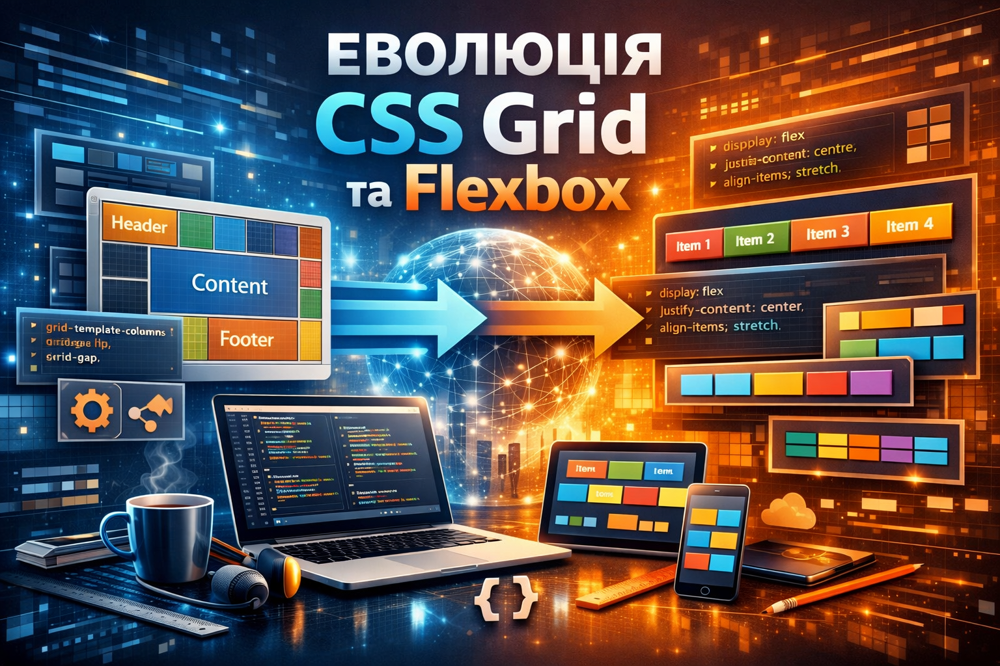

11 Червня, 2026
Штучний інтелект у вищій освіті
Сучасні університети активно впроваджують ШІ-асистентів для допомоги студентам у написанні коду та освоєнні Git-технологій.
Читати даліПрактична робота з Git — Завдання 2
Сучасні університети активно впроваджують ШІ-асистентів для допомоги студентам у написанні коду та освоєнні Git-технологій.
Читати даліРобота з гілками, створення Fork та оформлення правильних Pull Requests стають обов'язковими навичками для кожного майбутнього розробника.
Читати далі
Створення адаптивних інтерфейсів стало значно простішим завдяки сучасним стандартам CSS. Сторінки підлаштовуються під будь-які екрани.
Читати даліЗахист персональних даних та безпека репозиторіїв виходять на новий рівень. Студентам рекомендують використовувати двофакторну автентифікацію (2FA) для GitHub.
Читати даліПопулярність GitHub Pages, Vercel та Netlify продовжує зростати. Студенти можуть безкоштовно опублікувати свої перші вебсторінки за лічені хвилини.
Читати далі